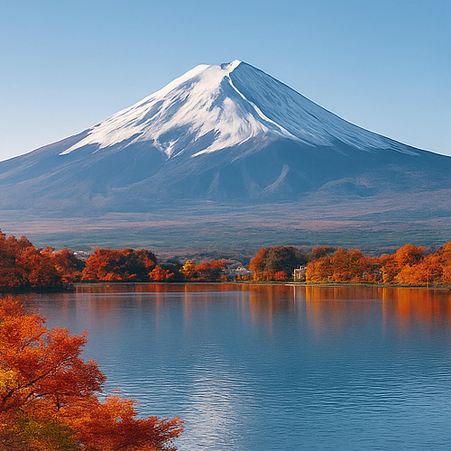

Mont Fuji – Symbole Éternel de la Nature, de la Culture et de la Spiritualité du Japon
Avec ses 3 776 mètres de hauteur, le Mont Fuji (富士山, Fujisan) n'est pas seulement la montagne la plus haute du Japon — c'est une icône nationale, un sanctuaire spirituel et un symbole mondial de l'harmonie entre l'homme et la nature. Parfaitement symétrique, éternellement enneigé et riche en mythologie, le Mont Fuji a inspiré poètes, pèlerins, peintres et aventuriers pendant plus de mille ans.
Un Site Classé au Patrimoine Mondial et un Sommet Sacré
Inscrit au Patrimoine Mondial de l'Humanité de l'UNESCO en 2013, le Mont Fuji est vénéré non seulement pour sa beauté naturelle, mais aussi comme un lieu profondément spirituel. Depuis le VIIe siècle, les pèlerins affrontent la montée vers le sommet en quête de purification et d'illumination. Des sanctuaires parsèment sa base, des marqueurs en pierre bordent les sentiers, et l'ascension elle-même est perçue comme une métaphore du voyage personnel de la vie.
Escalader le Mont Fuji – Une Aventure Inoubliable
Escalader le Mont Fuji est une expérience unique dans une vie. La saison officielle va de début juillet à début septembre, lorsque les refuges et les services de sécurité sont opérationnels. Il y a quatre sentiers principaux : Yoshida, Subashiri, Gotemba et Fujinomiya, chacun offrant des vues et des défis uniques.
De nombreux randonneurs commencent leur ascension la nuit pour atteindre le sommet à l'aube, assistant à la majestueuse Goraiko (l'aube) au-dessus des nuages. Le souvenir de ce moment spirituel reste gravé dans le cœur pour toujours.
La Région des Cinq Lacs du Fuji
Au pied nord du Mont Fuji se trouve la région des Cinq Lacs du Fuji (Fujigoko) — y compris le Lac Kawaguchi, le Lac Yamanaka et le Lac Motosu — chacun offrant des vues spectaculaires, des sources thermales, des sentiers de randonnée et des ryokan traditionnels. Parfaits pour ceux qui souhaitent admirer la beauté du Fuji sans l'escalader, ils offrent des panoramas dignes de cartes postales dans toutes les directions.
Culture, Art et Légende
Le Mont Fuji est depuis toujours une muse pour les artistes et écrivains. Il apparaît fréquemment dans les estampes Ukiyo-e, en particulier dans la série "Trente-six vues du Mont Fuji" de Hokusai. Il est également un sujet central dans la religion shintoïste ancienne, où il est considéré comme la demeure d'une divinité de la montagne (kami). Aujourd'hui encore, sa forme représente la perfection, la résilience et la transcendance.
Conseils Pratiques pour les Visiteurs
- 🌸 Points de vue recommandés : Pagode Chureito, Lac Kawaguchi et Hakone
- 🌸 Saison de l'ascension : Début juillet – Début septembre
- 🌸 Expérience à l'aube : Départ de la cinquième station autour de 21h00
- 🌸 Comment y arriver : Autobus express de Shinjuku à Kawaguchiko / Cinquième station Subaru
- 🌸 Conseil : Réservez à l'avance les refuges pendant la saison d'ascension
Pourquoi le Mont Fuji est une Étape Incontournable
Que vous rêviez d'atteindre le sommet, de prendre des photos de cartes postales ou simplement de savourer son énergie majestueuse de loin, le Mont Fuji est une destination incontournable pour chaque voyageur au Japon. Ce n'est pas seulement une montagne — c'est le cœur battant de la beauté spirituelle et naturelle du Japon.
Tags : Mont Fuji, escalade Mont Fuji, Fujisan, voyages au Japon, Cinq Lacs Fuji, randonnée au lever du soleil Japon, lieux iconiques Japon, volcans Japon, nature et culture Japon, montagnes spirituelles
Vous planifiez une visite au Mont Fuji ?
Pour vivre une expérience vraiment immersive et significative, nous vous conseillons de réserver un guide privé certifié de notre équipe. Toutes nos guides sont des professionnels licenciés et reconnus par le gouvernement japonais, et offrent des visites personnalisées en fonction de vos intérêts. Contactez à l'avance la guide sélectionnée pour confirmer la disponibilité et obtenir une assistance experte pour votre voyage.